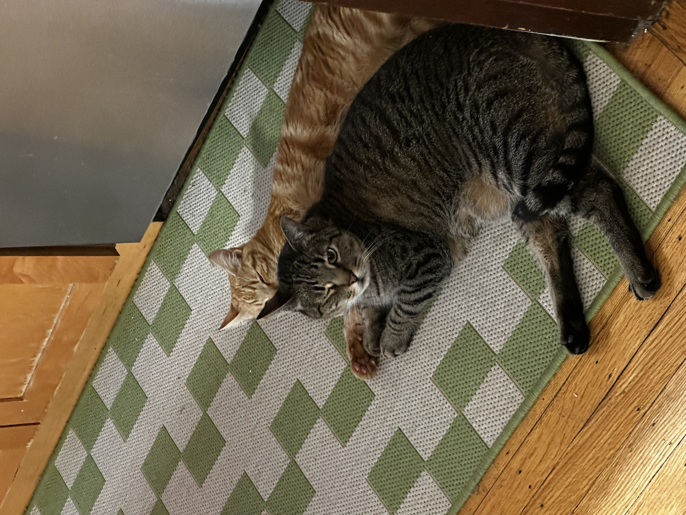

About Me
Hi, I'm Ruby — a Technical Program Manager living in San Francisco, working on scaling capacity infrastructure and enabling AI quickly, efficiently, and ethically.
I started my career at the intersection of AI, information systems, public policy, and ethics, which gave me a unique lens on the complex challenge of responsible technology. I care about striking a balance between innovation and privacy, security, and integrity.
When I'm not thinking about capacity planning, I'm practicing yoga, reading (sci-fi or memoirs), going to the movies, and playing with my two cats, Pumpkin and Lima Bean.

I believe in empathy in technology and everyday life. I believe that movies are always better when watched at a movie theatre, and that plant-based milk should cost less than dairy milk.
What I've Done
Here's a snapshot — download my full resume for more detail.
-
Technical Program ManagerMetaJune 2024 – May 2026
Owned end-to-end compute capacity management for Meta's Risk org (~$118M), scaled AI infrastructure 25x from 72 to 1,800 inference GPUs, and drove $58M in infrastructure savings — exceeding efficiency targets by 490%.
-
Strategy Consultant / Technical Program ManagerDeloitte Consulting (embedded at Meta)September 2021 – June 2024
Embedded at Meta in a staff augmentation role. Managed 8 data center infrastructure projects enabling 387.5 MW of capacity delivery, then led Privacy compute capacity TPM — reclaiming 3.6 MW of unused capacity (~$34.1M) and closing 92.8% of quota violations across ~50 teams.
-
Public Sector Consulting InternSyracuse University Geography DepartmentJuly 2020 – September 2020
Researched Smart City applications — AI, ML, GIS, and predictive analytics — in COVID-19 response to support Syracuse's designation as a New York State flagship smart city.
-
Information Technology InternXylem Inc.May 2019 – February 2020
Led company-wide rollout of a new internal communications platform across a global workforce of 17,000+, deployed technologies at corporate HQ, and trained senior leadership on tools supporting hybrid work.
-
Machine Learning Research AssistantSyracuse University School of Information StudiesNovember 2019 – February 2020
Supported Professor Lu Xiao's research on propaganda detection in news media by validating the accuracy of bias-identification machine learning algorithms.
-
B.S. Information Management and TechnologySyracuse University — Magna Cum LaudeAugust 2017 – May 2021
Renée Crown University Honors College member and Phanstiel Scholar. Published research on algorithmic bias and AI governance in the N.Y.U. American Public Policy Review (2022).
What I Care About
Technology shapes the world — and I think the people building it have a responsibility to do so thoughtfully. Here's what guides me.
Ethical AI
AI is only as good as the values baked into it. I published research on algorithmic bias and AI governance, and I bring that lens to every infrastructure and program decision I make.
Privacy
People's data deserves to be treated with care. I've spent years managing privacy compute infrastructure and believe strong privacy practices are a feature, not a constraint.
Reading
If I'm reading something really good I will abandon everything until the book is done. I usually fall into phases where I read a lot of one genre at once. Right now I'm interested in non-fiction about old Hollywood. Before that I was on a memoir kick. Here is my Goodreads profile, where I track my books, and try (and fail) to beat my annual book challenge.
Going to the Movies
I'm a proponent of supporting local movie theatres (there are so many good ones in SF). The movies is one of the best third spaces we have! Check out my Letterboxd to see what I'm watching.
Trying New Food
Hot take: the food scene is better in the Bay Area than in New York (I used to live in Manhattan and before that Connecticut). Of course New York has more of everything, but SF has a crazy food scene relative to its size — not to mention the rest of the Bay Area! I love trying new dishes and finding new places to eat. It's hard but I rank everywhere I go on Beli (@rubyisley). Can you tell I love making lists? I'm a sucker for an app that combines something I love with an opportunity to make a list.
Efficiency with Intention
Driving $58M in infrastructure savings wasn't just about cost — it was about freeing up resources to do more meaningful work. I care about doing things well and doing them right.
Get In Contact
I'd love to hear from you — whether it's a collaboration, a question, or just a hello.
-
✉️
Email rubyisley7@gmail.com
-
💼
LinkedIn linkedin.com/in/rubyisley
-
🐙
GitHub github.com/rubsie7